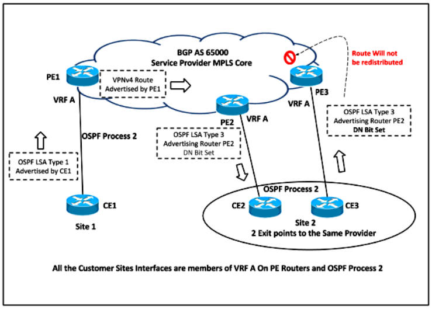
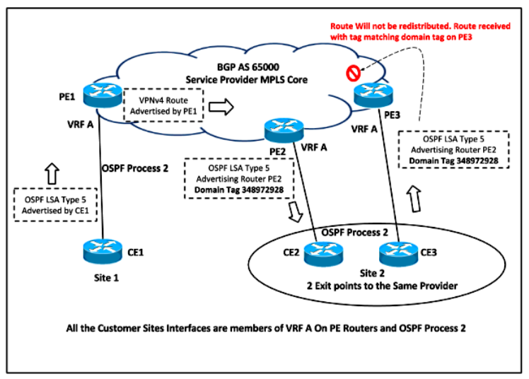

OSPF as PE-CE routing protocol
03 Oct 2017Содержание
Sham-Link
Используется при MPLS L3VPN с наличием backdoor канала между PE (между CE).
По умолчанию при использовании OSPF на стыке PE-CE, клиент видит маршруты с другого CE как OSPF IA (RFC 4576/4577):
CE1#sh ip ospf database summary 10.0.0.6
OSPF Router with ID (10.0.0.1) (Process ID 100)
Summary Net Link States (Area 0)
Routing Bit Set on this LSA in topology Base with MTID 0
LS age: 1662
Options: (No TOS-capability, DC, Downward)
LS Type: Summary Links(Network)
Link State ID: 10.0.0.6 (summary Network Number)
Advertising Router: 10.0.12.2
LS Seq Number: 80000001
Checksum: 0xF692
Length: 28
Network Mask: /32
MTID: 0 Metric: 11
Если между PE организован backdoor канал, не входящий в MPLS облако, и поверх него настроено OSPF соседство в VRF клиента, данный канал по умолчанию будет использоваться для трафика (intra-area маршруты имеют больший приоритет, чем inter-area).
При использовании sham-link между PE строится виртуальный линк в VRF клиента. Таким образом PE устанавливают прямое OSPF соседство и маршрут перестает быть IA:
CE1#sh ip ospf database router 10.0.0.6
OSPF Router with ID (10.0.0.1) (Process ID 100)
Router Link States (Area 0)
LS age: 1536 (DoNotAge)
Options: (No TOS-capability, DC)
LS Type: Router Links
Link State ID: 10.0.0.6
Advertising Router: 10.0.0.6
LS Seq Number: 80000004
Checksum: 0x86CF
Length: 48
Number of Links: 2
Link connected to: a Stub Network
(Link ID) Network/subnet number: 10.0.0.6
(Link Data) Network Mask: 255.255.255.255
Number of MTID metrics: 0
TOS 0 Metrics: 1
DN (down) bit
Используется для предотвращения петель при редистрибуции PE-CE (схема с наличием дополнительной OSPF связи между CE). PE выставляет на LSA Type 3 (также Type 5 и Type 7) флаг DN. Если CE получит данный LSA от другого CE по внутреннему OSPF и передаст его “своему” PE, “свой” PE не будет перераспределять его в MP-BGP:
*Aug 15 10:55:23.425: OSPF-100 INTER: Running spf for summaries area 0
*Aug 15 10:55:23.425: OSPF-100 INTER: Start processing: type 3, LSID 10.0.0.9, mask 255.255.255.255,
*Aug 15 10:55:23.425: OSPF-100 INTER: adv_rtr 10.0.12.2, age 1697, seq 0x80000001, area 0
*Aug 15 10:55:23.425: OSPF-100 INTER: Downward bit set/Non-backbone LSA
При использовании sham-link между PE DN bit не выставляется, так как PE не использует LSA Type 3: 
Для LSA Type 5 и Type 7 для данных целей дополнительно используется route tag с указанием на VPN ID: 
*Aug 15 10:55:23.425: OSPF-100 EXTER: Started Building Type 5 External Routes
*Aug 15 10:55:23.425: OSPF-100 EXTER: Start processing Type 5 External LSA 10.0.100.2, mask 255.255.255.255
*Aug 15 10:55:23.425: OSPF-100 EXTER: adv_rtr 10.0.12.2, age 113, seq 0x80000005, metric 1, metric-type 2, fw-addr 0.0.0.0
*Aug 15 10:55:23.425: OSPF-100 EXTER: Tag equals to VPN Tag, ignoring the LSA